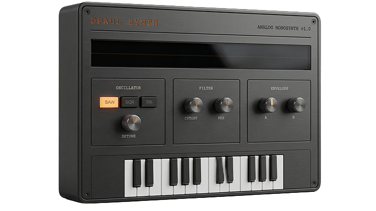
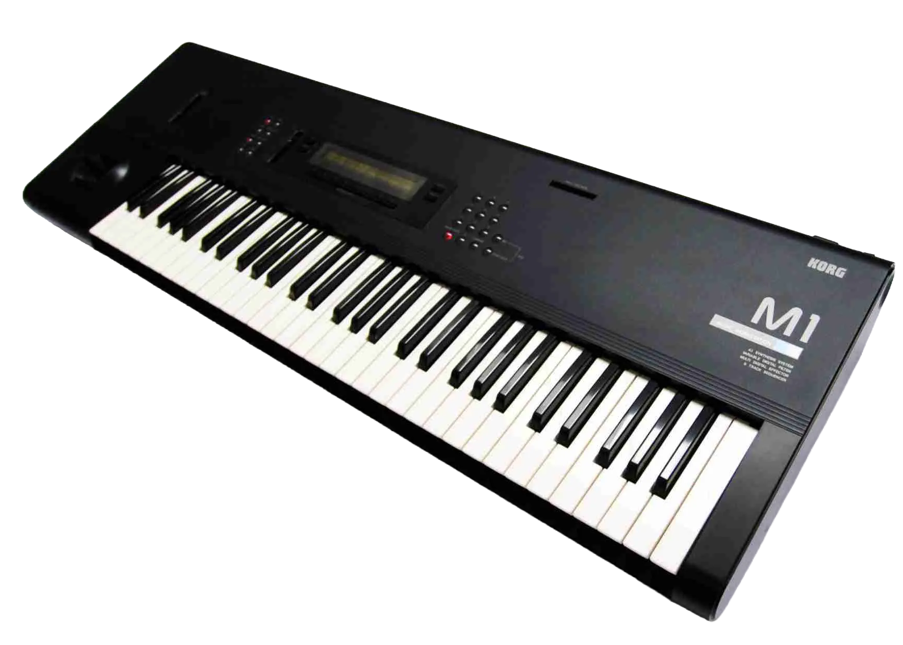
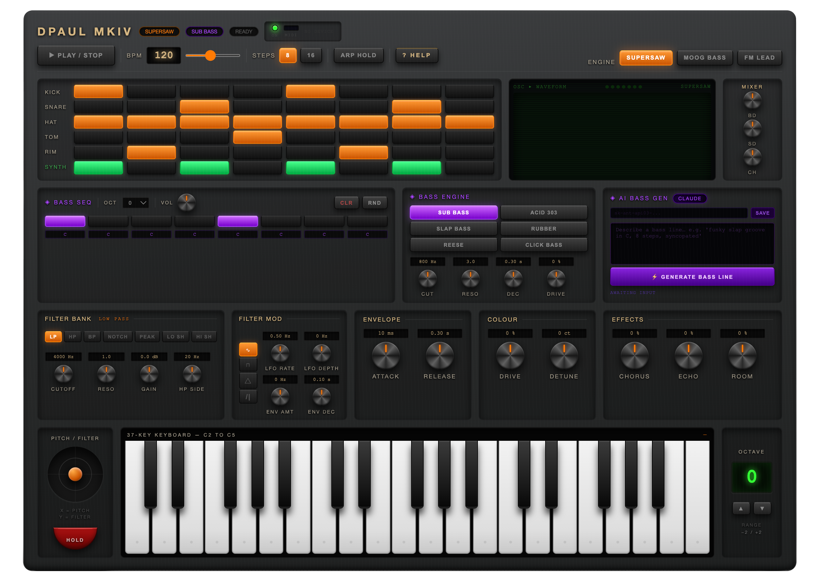
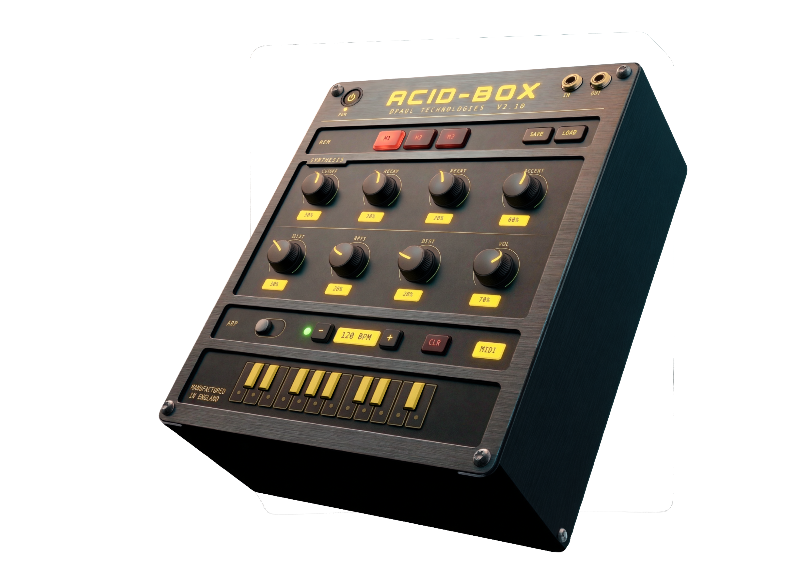

Thirty years of hardware. Then this happened.
Curiosity drives the most interesting parts of life. After years of hardware drum machines and analog keys, I had to know: could I build an instrument from scratch in a browser?
The first prototype. One oscillator, three waveforms, basic filter. It made sound, and that was enough to keep going.

MKI — 3D Render from UI
It started in 1991. Before the internet, you found gear in The Loot classifieds. I bought a Korg M1 from a stranger on a landline.
We both worked at Liverpool Street station. Meeting at the office to swap cash for keys started a 30-year obsession with synthesis.

A complete ground-up rebuild. 37 keys, joystick pitch/filter, 6-row sequencer, and a full FX chain (Reverb/Tape Echo).

To see these synths in action, visit this website on a desktop/laptop.
Inspired by the legendary TB-303. Monophonic, squelchy, and focused on that iconic resonant filter scream.

Thirty years of machines. You can't design a browser filter if you haven't twisted a real resonance knob into feedback.

M1 · Triton · Proteus · MicroKorg · Monologue